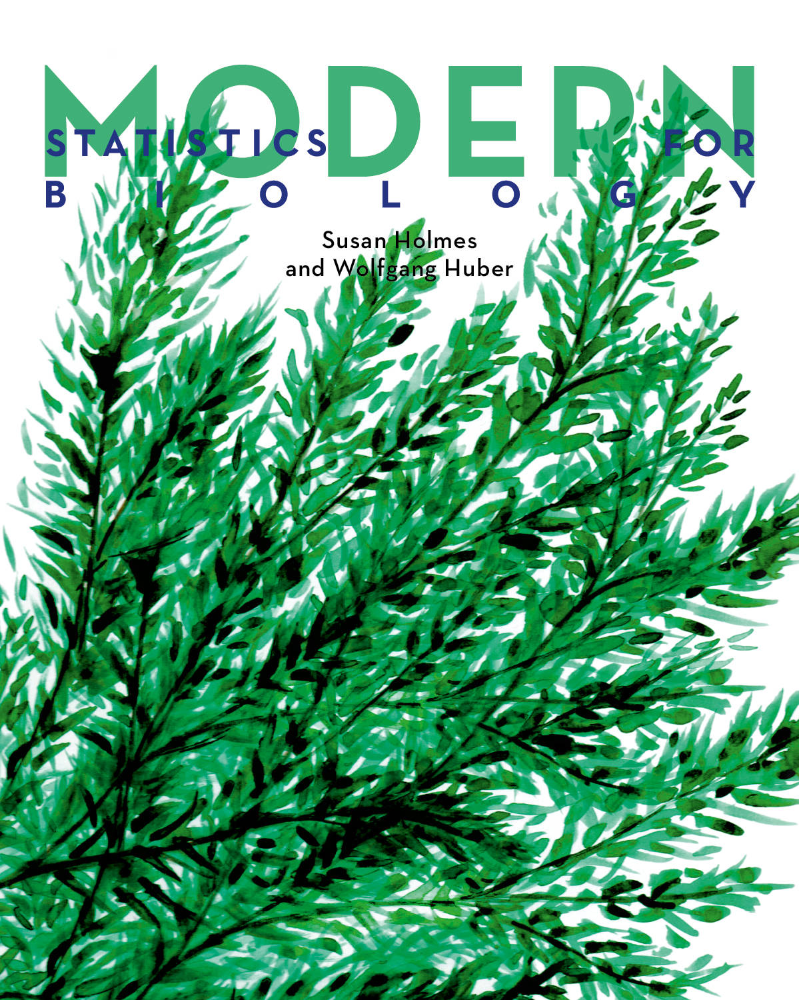

Modern Statistics for Modern Biology
Home
How to cite this book: Modern Statistics for Modern Biology, by Susan Holmes and Wolfgang Huber, Cambridge University Press (2019). ISBN: 9781108705295. License: CC BY-NC-SA
Note to readers
Please navigate between and within the chapters of this book via the dropdown menu at the top right.
The print version of the book (see below) was published in 2019, but we are continually updating the online version. So if you spot any inaccuracies, mistakes, typos, please let us know and we will do our best to improve the book accordingly.
A particular issue is the code examples. R and its many packages on CRAN and Bioconductor are a highly dynamic environment. We finalized the print version in 2018 on R 3.5 and Bioconductor 3.7. We have been constantly updating the code to changes in R or the packages. What you see here has been built using R version 4.3.0 (2023-04-21) using the most recent release versions of all packages on 2023-08-03. It is possible that we have overlooked unintended changes whose detection is not easy to automate, e.g., in plot outputs or in results from certain computations. We think that this risk is a prize worth paying to enable readers to work in an up-to-date compute environment, but apologize to our readers for possible confusions.
If you spot anything, please alert us via email to wolfgang.huber [at] embl.org.
Code and data
Package Installation
You can install all the packages required to run every code example in the book via the following command:
source("https://www.huber.embl.de/msmb/install_packages.R")Data
- Zipped data directory
last modified: Dec 15 2022
md5 hash:4aefffbcd826d9645b9e0e5b12274f07
Code
Download an electronic copy of the whole book
Physical Copy
If you would like a hard copy of Modern Statistics for Modern Biology, the book can be purchased from Cambridge University Press

Page built on 2023-08-03 21:37:40.906823 using R version 4.3.0 (2023-04-21)